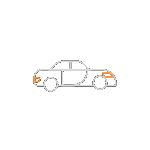
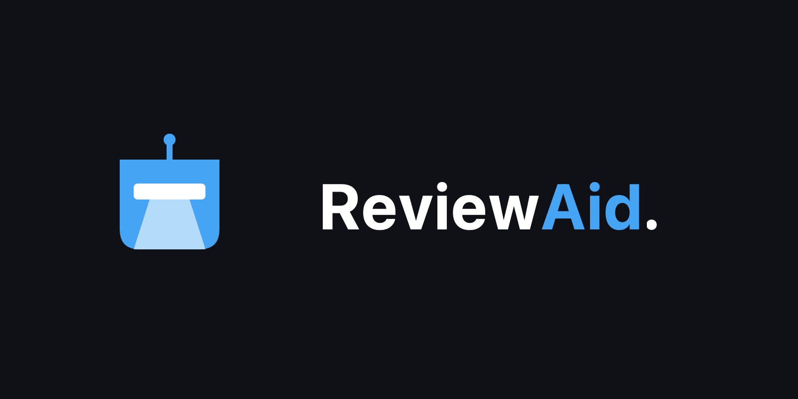
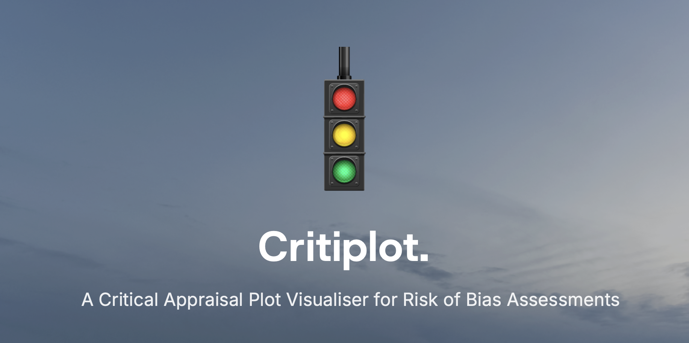
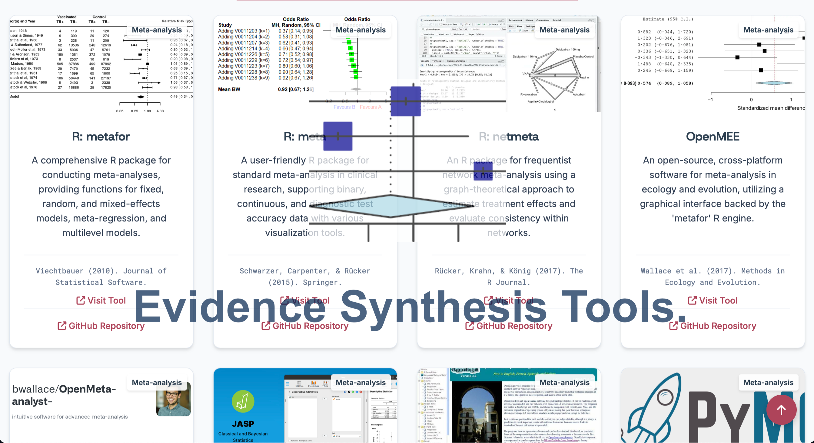
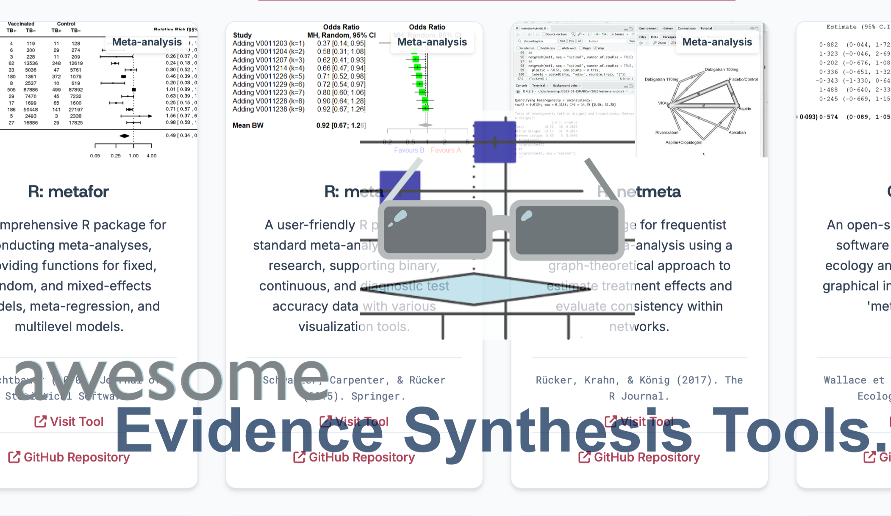
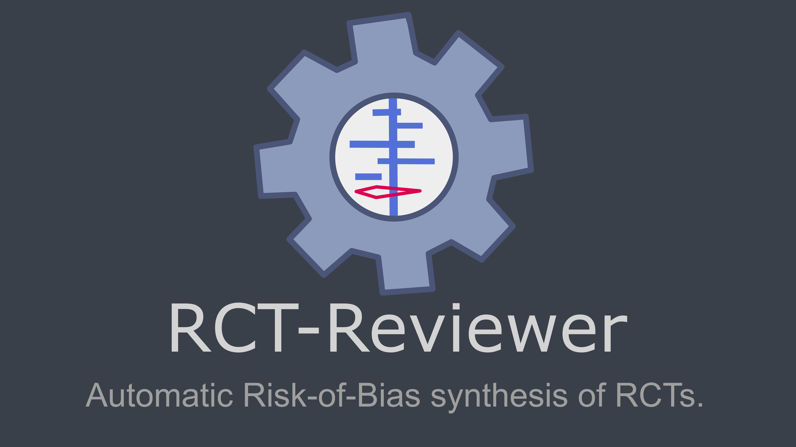
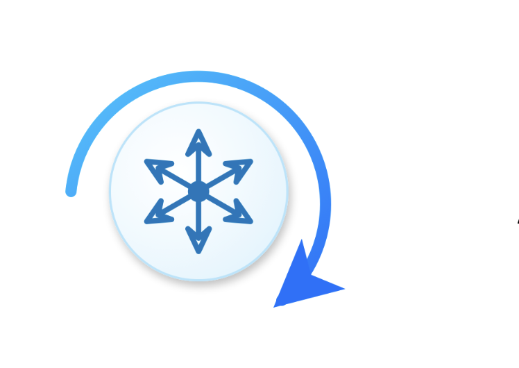
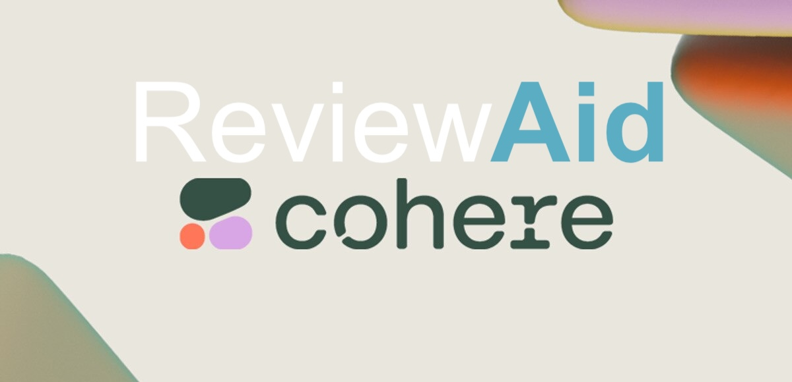
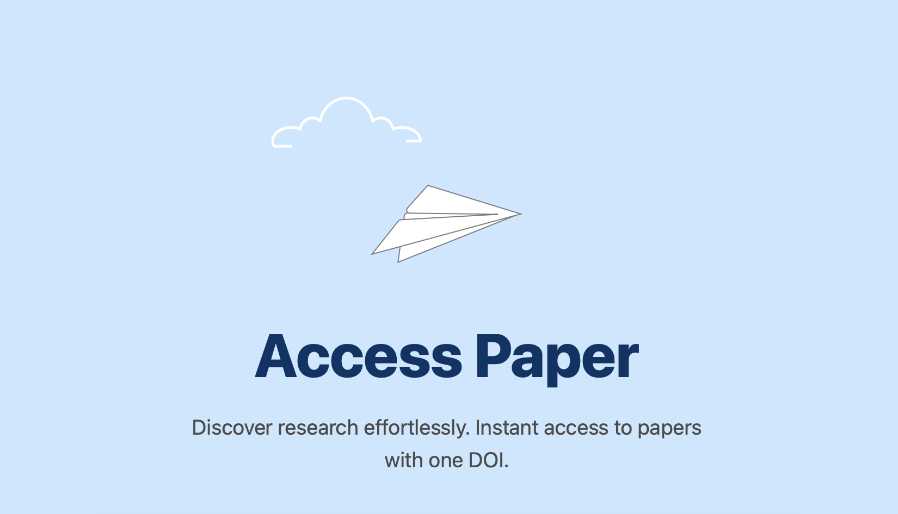
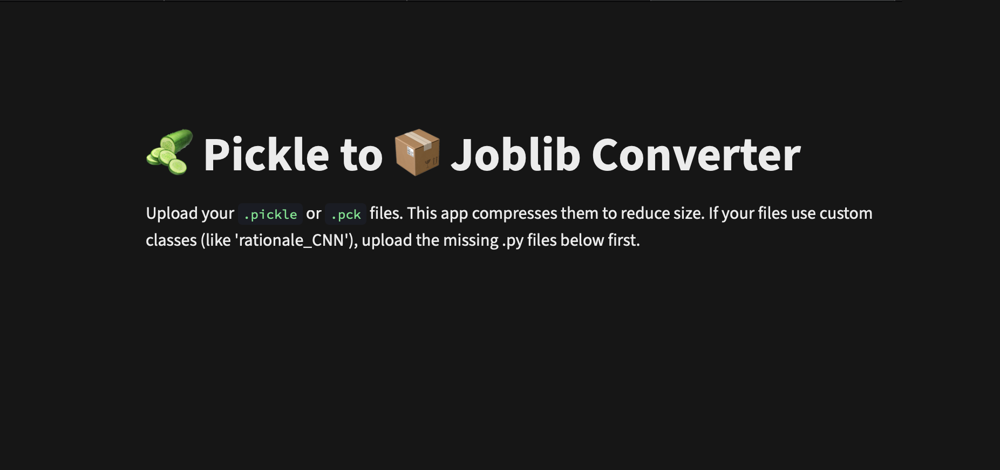

I am Vihaan, from India. I am 20 and am studying at SEU, Tbilisi, Georgia. I am a medical student who does software development, open access and animation. I do research too, particularly evidence synthesis methodologies, medicine based evidence synthesis like SRMAs, NMA. I make open-source research softwares which I believe might help research scientists reduce their workload and avoid the hassle of manual work!
As my projects are self-funded, they are hosted using Streamlit and ShinyApps. Support through GitHub Sponsors is highly appreciated and directly contributes to the sustainability of my work.
“Aurumz” is just an online username, I made in 5th grade from the Latin word (Aurum) for gold. I've grinded countless hours on Adobe Flash/Animate, Illustrator, After Effects, and Premiere Pro.
I’ve basically used macOS my whole life and barely know how to use Windows. Other than that, I like to experiment with tech softwares like modified macOS Softwares, Adobe Softwares etc. as well as hosting local MCPs and connecting it with AI and actually exploiting it! (hehe).
I love marine aquariums. My favourite fish is the lionfish, especially pterois Radiata and Antennata (colours) and pterois Volitans (size). One day I’d love to build huge saltwater aquariums, each for lionfish, tangs + corals, and maybe even a baby Blacktip Reef Shark (If I end up rich, def not on a physician's salary 😭).
I cook food during my free time with food being 10/10 at a p-value of 0.01. There’s a lot more stuff I’m into too, but you’ll have to know me a bit to find that out!
A collection of open-source research software and academic tools.







A modernized, standalone version of RobotReviewer serving as a third-party reference tool for risk-of-bias assessment in randomized controlled trials (RCTs). Trained on 12,808 RCTs, it provides an objective, data-driven third opinion to resolve disagreements between independent human reviewers in systematic reviews.
Ongoing developments and beta versions of academic research tools.



A collection of experimental tools, tech utilities, and personal hobby projects.

"When life gives you .pickles, make .joblib!". A lightweight Streamlit utility that converts .pickle, .pkl, and .pck machine learning model files into compressed .joblib formats. It is optimized for reducing model size, improving loading efficiency, and streamlining ML deployment workflows.
A repacked build of Asphalt 6: Adrenaline (v1.4.6), modified to run on modern macOS systems via PlayCover. This project involved re-signing and modifying the legacy 32-bit .ipa file to resolve corruption issues. Designed for macOS systems supporting 32-bit applications, it may also function on compatible legacy iOS devices.
Here are my Socials, feel free to reach out to me for collaborations, research opportunities, or just to say გამარჯობა! (hello!)